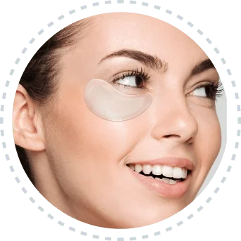
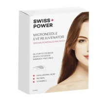

AUGENRINGE & TRÄNENSÄCKE: MIKRONADEL-AUGENPFLASTER
Ausgezeichnet
 8,152 Bewertungen auf
8,152 Bewertungen auf
 Trustpilot
Trustpilot
8,152 Bewertungen auf
Trustpilot
„Diese sind hervorragend gegen Schwellungen unter den Augen. Ich benutze sie einmal pro Woche und sie wirken Wunder! Ich liebe es, sie in meiner Hautpflege-Routine zu haben.‟
 Emma Müller
Emma Müller
„Ich mag es, dass diese Augenpads wirklich bei Schwellungen und müden Augen helfen. Ich habe sie über Nacht getragen.‟
Berta
„Ich habe diese in meinen Mini-Kühlschrank gelegt, und es fühlt sich wie ein kleines Spa an, wenn ich sie aufsetze! Ich habe sie bisher nur einmal benutzt, daher habe ich noch keinen großen Unterschied bemerkt, aber ich liebe sie jetzt schon!“
Karola
„Ich benutze diese 1-2 Mal pro Woche und sie sind wie eine erfrischende Abkühlung für den Bereich unter meinen Augen! Ich genieße es immer, sie zu verwende.‟
Käthe
„Dies sind einige der besten Augenmasken, die ich je ausprobiert habe… und ich habe viele davon ausprobiert! Ich habe bereits nach der ersten Anwendung einen deutlichen Unterschied bei meinen Augenringen bemerkt. Ich kann diese Masken sehr empfehlen!!‟
Sigrid
Innovative Augenpflaster enthalten mehr als 1900 Mikronadeln, die sich direkt in die Epidermis auflösen, genau dort, wo sie am effektivsten dabei helfen, dunkle Augenringe und Tränensäcke zu reduzieren.
Insgesamt:
40,00€
20,00€
Sparen Sie 20,00€


 Alle Transaktionen sind gesichert und verschlüsselt
Alle Transaktionen sind gesichert und verschlüsselt
Wie gesehen auf


Retter für die Augenpartie


Vitamin C
Hilft, Augenringe zu reduzieren und die Haut aufzuhellen.
Hyaluronsäure
Bietet tiefe Feuchtigkeit und hilft, Augenringe zu reduzieren.
Retinol
Zielt auf feine Linien, Falten und Krähenfüße ab und reduziert sie.
Gesündere und sichtbar jüngere Haut

Ihr Retter für die Augenpartie:
Erleben Sie die revitalisierende Wirkung unserer Eye Rejuvenator-Pads, die Schwellungen reduzieren und die empfindliche Haut unter Ihren Augen aufhellen, sodass Sie erfrischt und jugendlich aussehen. Einfach unter den Augen anbringen und 30 Minuten tragen – das war’s!
Augenpatches – neu erfunden:
Innovative Technologie hinter unseren Augenpatches mit 1900 selbstauflösenden Mikronadeln, die unsere hautregenerierende Formel effektiv tief in die Epidermis transportieren, wo sie am wirkungsvollsten gegen Augenringe und Tränensäcke wirkt.
Keine müden Augen mehr:
Genießen Sie die Vielseitigkeit unserer Augenpads, die nicht nur den Bereich unter den Augen, sondern auch Krähenfüße, Zornesfalten und andere zu Falten neigende Gesichtspartien gezielt behandeln – für eine umfassende Regeneration und einen strahlend schönen Teint.
Es gibt keinen Vergleich
Sie werden nie wieder zu herkömmlichen Augenpads zurückkehren!

S+P Mikronadeln
 1900 Mikronadeln
Von Dermatologen geprüft
Wirkstoffe unter die Haut bringen
Frei von Tierversuchen
Bewährte Ergebnisse
1900 Mikronadeln
Von Dermatologen geprüft
Wirkstoffe unter die Haut bringen
Frei von Tierversuchen
Bewährte Ergebnisse

Gewöhnlich
 Regelmäßiger Augenverband
Zweifelhaft
Die Inhaltsstoffe bleiben auf der Haut
Tierversuche
Keine Garantien
Regelmäßiger Augenverband
Zweifelhaft
Die Inhaltsstoffe bleiben auf der Haut
Tierversuche
Keine Garantien
SWISS+POWER VORTEIL


AKTUELLE BEWERTUNGEN
 @LINAKLUN
@LINAKLUN
 Verifizierter Käufer
Verifizierter Käufer

„Diese Patches sind unglaublich, und die Qualität ist großartig. Ich habe sie über Nacht draufgelassen, und der Bereich unter meinen Augen ist eindeutig glatter geworden. Es lohnt sich auf jeden Fall, sie auszuprobieren!“
@LUKAPEHNEC
Verifizierter Käufer

„Ich habe sehr empfindliche Haut, die außerdem trocken/ölig ist, also habe ich das volle Paket. Dieses Produkt ist ziemlich gut!! Ich bin bisher zufrieden.‟
@SABINAMUSIC
Verifizierter Käufer

„Ich mache Microneedling zu Hause, und diese sind ein Segen – so einfach zu benutzen, einfach auflegen und schlafen, morgens abnehmen. Ich liebe die Bequemlichkeit bei meinem vollen Zeitplan! Ich würde sie empfehlen. Der Nachteil ist, dass es mehr davon in einer Box geben könnte.‟
@SPELAHOCEVAR
Verifizierter Käufer
"„Einfach zu benutzen, effektiv und mein Favorit. Sie sind etwas teuer, aber ich habe immer welche vorrätig…‟
 @GAJARIBIC
Verifizierter Käufer
@GAJARIBIC
Verifizierter Käufer
„Mir haben diese Patches gefallen. Diese kleinen „Nadeln“ lösen sich nach einiger Zeit auf und hinterlassen eine glatte Haut. Ich werde sie erneut bestellen.‟
Kundenbewertungen
4.5/5
Elke Aberer
Verifizierter Käufer
"Ich mag sie, ich bekomme langsam ein wenig Dunkelheit unter meinen Augen, und diese helfen, die Haut dort geschmeidiger und weniger geschwollen zu halten.‟
5/5
Birgit Amann
Verifizierter Käufer
„Ein tolles Mikronadel-Patch. Sie sind sicher, schmerzfrei und tun, was auf der Verpackung versprochen wird.‟
5/5
Melanie Auspitz
Verifizierter Käufer
„Oh mein Gott, dieses Produkt ist erstaunlich. Ich habe schon alles ausprobiert für Bereiche im Gesicht, in denen ich Volumen verloren habe, einschließlich Filler. Mit diesen Patches konnte ich es an Stellen auftragen, an denen ich es mit Fillern nicht konnte, und zu meiner Überraschung hat es funktioniert. Ich werde dieses Produkt weiterhin kaufen, weil ich jetzt besessen davon bin, haha.‟
4.7/5

Monika
Verifizierter Käufer
„Mir hat wirklich gefallen, wie sie sich auf meiner Haut angefühlt haben und wie sie die Haut unter meinen Augen geglättet haben. Ich bin bereits beim zweiten Paket.‟
4.5/5
Friedl Bauder
Verifizierter Käufer
„Insgesamt war dieses Produkt in Ordnung und es hat einen Unterschied gemacht, aber es ist nicht so wirkungsvoll. Vielleicht zeigen sich bessere Ergebnisse, wenn man es häufiger benutzt.‟
5/5
Claudia
Verifizierter Käufer
„Einfach zu bedienen, schnelle Ergebnisse, sehr zu empfehlen!‟
4.5/5
Steffi
Verifizierter Käufer
„Ein großartiges Mikronadel-Patch. Sie sind sicher, schmerzfrei und halten, was auf der Verpackung versprochen wird.‟
5/5
Zoe Carter
Verifizierter Käufer
„Diese kleinen Schätze sind ein reines Genie und wirken Wunder bei Augen, die nicht genug Schlaf bekommen haben oder zu viel Stress hatten. Einfach auflegen und eine Weile warten.‟
4.7/5
Margareta Basinger
Verifizierter Käufer
„Ich bin wirklich froh, dass ich diese Mikronadel-Patches gefunden habe! Sie sind schnell und gut verpackt angekommen. Sie sind sehr einfach anzuwenden. Ich lasse sie über Nacht drauf, und wenn ich aufwache, ist meine Augenpartie gut mit Feuchtigkeit versorgt! Sie reizen die Haut nicht und lassen sie einfach praller aussehen!‟
Fragen? Wir haben die Antworten
Sind die Patches wiederverwendbar?
Nein, jedes Pflaster ist nur für den einmaligen Gebrauch, da es eine aktive Formel enthält, die in die Haut eindringt.
Wie viele Patches sind in der Box?
Jede Box enthält 3 Paare Augenpads.
Wie oft sollte ich sie verwenden?
Die empfohlene Anwendung ist 2-3 Mal pro Woche und danach wöchentlich, um die Haut unter den Augen gesund und strahlend zu halten.
Wie lange sollte ich sie tragen?
Verwenden Sie es mindestens 30 Minuten oder über Nacht für beste Ergebnisse.
Mikronadeln? Tut es weh?
Unsere Augenpatches sind mit den kleinsten Mikronadeln auf dem Markt ausgestattet, die beim Auftragen nur wenig Unannehmlichkeiten verursachen. Nutzer berichten, dass sie schmerzfrei sind.
Sind sie besser als gewöhnliche Patches?
Regelmäßige Patches (und Cremes) bleiben nur auf der Hautoberfläche, wo sie sehr wenig tun, um dunkle Ringe und Augenringe zu verbessern. Mikronadel-Augenpatches lösen sich unter der Hautschicht auf und liefern die aktive Formel dorthin, wo sie am meisten benötigt wird und am effektivsten ist, um die Hautgesundheit und das Aussehen zu verbessern.